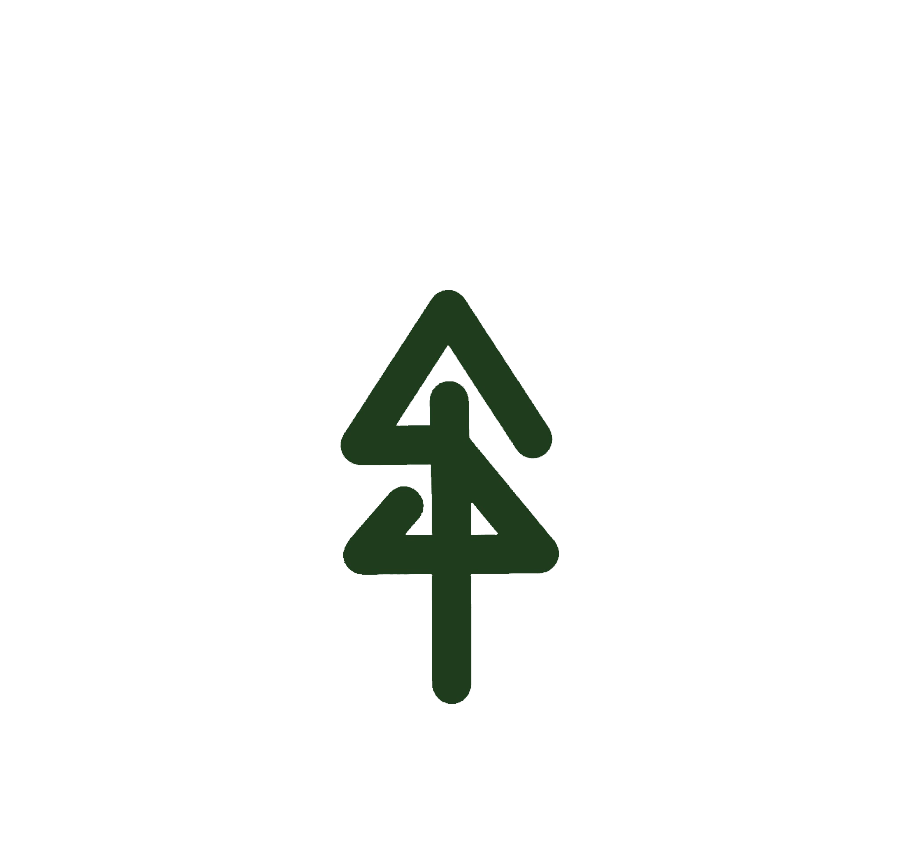

Would you like a quick tour of the app before you start exploring Baguio?
The Dahlias in the Centennial Garden are now in full bloom. Don't forget to scan the marker for a 3D growth time-lapse!
Discover our new version featuring a fully interactive layout. Exceed your expectations with AR-powered stories